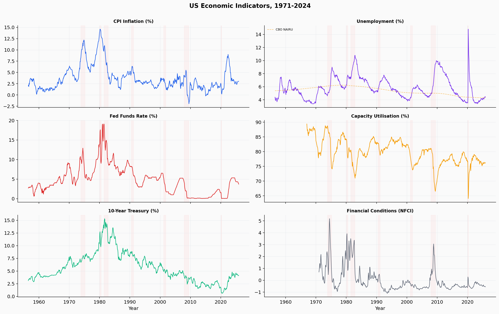
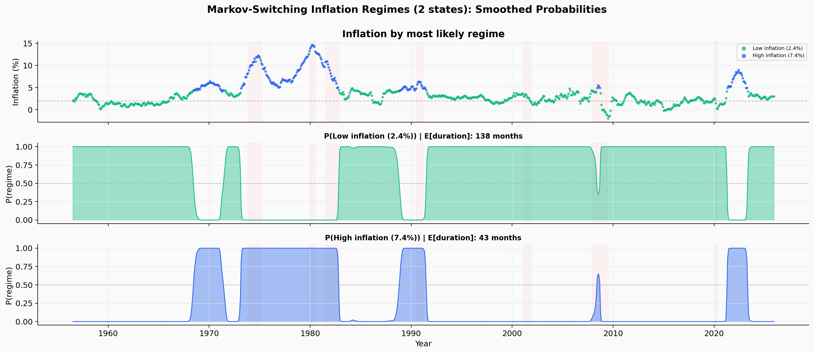
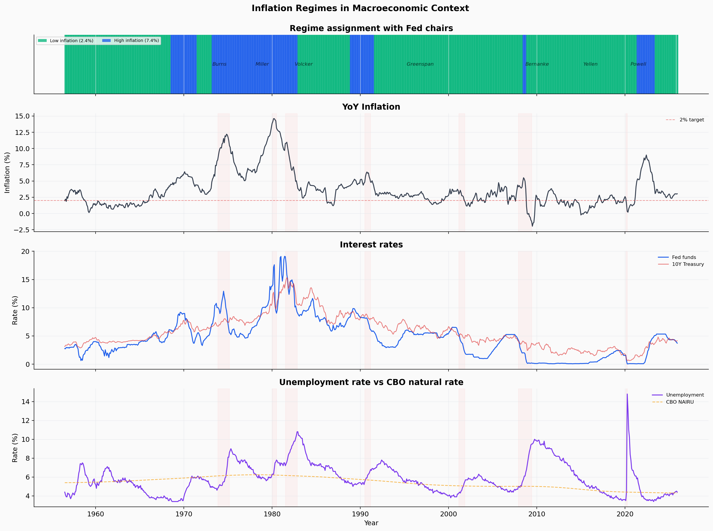
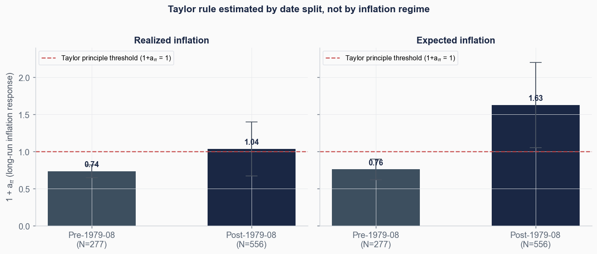
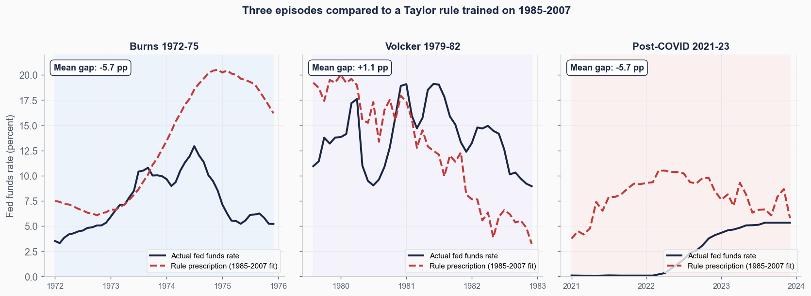

A Markov-switching model identifies two distinct inflation regimes in US monthly data since 1956. The page then estimates a single Taylor rule on the anchored-expectations era (1985 to 2007) and applies it to three episodes where inflation rose above target: Burns in the early 1970s, Volcker around 1980, and the period after COVID-19. Two of these episodes produce numerically identical gaps against the rule.
The Taylor rule is a formula proposed by John Taylor in 1993 that describes how a central bank should set short-term interest rates in response to two variables. The first is inflation relative to a target, conventionally 2 percent. The second is unemployment relative to its "natural" level, called the unemployment gap. The rule used in this page takes the following form:
Here i is the policy interest rate, π is current inflation, u is unemployment, and u* is the natural rate of unemployment. The coefficient (1 + aπ) measures how much the central bank moves rates when inflation moves by one percentage point.
The Taylor principle is the requirement that this coefficient be greater than 1. Intuitively, if inflation rises by 1 point, the nominal interest rate must rise by more than 1 point so that the inflation-adjusted (real) cost of borrowing actually increases. If (1 + aπ) is less than 1, real rates fall during inflationary episodes, which can allow inflation to accelerate further.
Markov-switching models (Hamilton, 1989) classify each observation into one of several discrete "regimes" while accounting for the fact that economies tend to stay in the same regime for long stretches. The model estimates two things from the data: the average inflation level in each regime, and the monthly probability of transitioning between regimes. Unlike clustering methods that ignore time, Markov-switching models capture the persistence of macroeconomic states.
NAIRU stands for the Non-Accelerating Inflation Rate of Unemployment. It is the unemployment rate at which inflation pressures are neither building nor easing. The Congressional Budget Office publishes a time-varying NAIRU series ranging from 4.3 percent to 6.2 percent over this sample. Earlier studies often used a fixed 5 percent benchmark, which overstates the unemployment gap in periods when NAIRU was higher (such as the late 1970s and early 1980s, when CBO estimates were 5.8 to 6.2 percent).
The page approaches this in three stages. First, a Markov-switching model identifies inflation regimes and documents a finding about how to read inflation persistence. Second, a Taylor rule is estimated on the 1985-2007 anchored-expectations period to serve as a benchmark for the modern Fed's average behaviour. Third, that rule is applied to three out-of-sample episodes: the Burns chairmanship of 1972 to 1975, the Volcker chairmanship of 1979 to 1982, and the post-COVID period from 2021 to 2023. The gap between actual and prescribed policy rates gives a quantitative comparison across the three episodes.
Eight monthly economic indicators from FRED, spanning July 1954 to December 2025. After merging and computing derived variables (year-over-year inflation, gaps, lags, spreads), the working sample contains 833 monthly observations.

Monthly US economic indicators, 1954 to 2025. Recession periods shaded. The CBO NAIRU (dashed) varies from 4.3 to 6.2 percent over the sample.
| Variable | FRED series | Role |
|---|---|---|
| CPI | CPIAUCSL | Year-over-year inflation |
| Unemployment | UNRATE | Labour market slack |
| CBO NAIRU | NROU (quarterly, interpolated) | Time-varying natural rate for unemployment gap |
| Expected inflation | MICH (from 1978; adaptive proxy earlier) | Forward-looking inflation measure |
| Fed funds rate | FEDFUNDS | Policy instrument (dependent variable) |
| Capacity utilisation | TCU | Real-economy output measure |
| 10-year Treasury | GS10 | Yield curve spread input |
| Financial conditions | NFCI (weekly, resampled monthly) | Financial stress indicator |
US inflation does not fluctuate around a single stable mean. It alternates between extended periods of low, anchored inflation and shorter episodes of high, volatile inflation. A two-state Markov-switching model fitted to the monthly CPI year-over-year series identifies the two regimes from the data itself, without imposing dates or thresholds.

Smoothed regime probabilities from the two-state Markov-switching model. The high-inflation regime concentrates in the 1970s and early 1980s, with a brief reappearance after COVID-19.
| Regime | Mean π | Mean u | Mean FFR | E[duration] | N |
|---|---|---|---|---|---|
| Low inflation | 2.4% | 5.8% | 3.6% | 11.5 yrs | 622 |
| High inflation | 7.4% | 6.0% | 8.0% | 3.6 yrs | 211 |

Inflation regimes overlaid on macroeconomic context. Fed chair tenures are labelled. The bottom panel shows unemployment against the CBO NAIRU.
Monthly transition probabilities are high for both states: P(stay low) = 0.993 and P(stay high) = 0.977. The low-inflation regime lasts roughly three times as long on average, which reflects how difficult it is to exit high inflation once expectations become unanchored. The expected duration of the low regime is 11.5 years, of the high regime 3.6 years.
A standard descriptive statistic for inflation is its autocorrelation at 12 months, written AC(12). It measures how strongly inflation today predicts inflation a year from now. A value near 1 implies strong predictability; a value near 0 implies that information has decayed.
On the full sample, AC(12) is 0.73. This number underpins the conventional view that inflation is highly persistent. However, the full-sample number mixes together the low and high regimes. Computed within each regime separately, the picture changes substantially:
| Sample | N | Mean π | AC(12) |
|---|---|---|---|
| Full sample | 833 | 3.7% | 0.73 |
| Low-inflation regime only | 622 | 2.4% | 0.28 |
| High-inflation regime only | 211 | 7.4% | 0.50 |
A formal variance decomposition makes this concrete. Total inflation variance over the sample is 7.54. The between-regime component, which measures how far the two regime means sit apart, equals 12.67. The within-regime component, which measures variance around each regime's mean, equals 4.22. The between-regime component is larger than the total because regimes are temporally clustered: data within a regime has below-sample variance, so the within-component is suppressed relative to total variance, while the between-component is amplified by the persistence of regime means.
Many forecasting models treat inflation as a single autocorrelated process and extrapolate from recent values. The decomposition above suggests this works well in stable regimes (where AC is anyway low) and works poorly across regime transitions (where the mean shifts discretely). Forecasters who assume the full-sample AC of 0.73 will systematically misjudge inflation predictability, overstating it during stable periods and understating regime transitions.
Re-estimating the Markov-switching model on data ending December 2019 produces stable parameters. The low-inflation mean shifts from 2.4 percent to 2.3 percent, the high-inflation mean from 7.4 percent to 6.5 percent, and transition probabilities barely move. The regime structure is not driven by the post-2020 inflation episode.
Whether the Fed's behaviour changed around 1980 has been debated for decades. The standard finding (Clarida, Gali and Gertler, 2000) is that the Volcker Fed and its successors responded much more aggressively to inflation than the Burns and Miller Feds did. The estimated coefficient (1 + aπ) crosses from below 1 to above 1 at the 1979-08 break date.
A natural way to test this on the present sample is to split the data at 1979-08 and estimate the Taylor rule on each subsample. The plot below shows (1 + aπ) from a static OLS regression with HAC-corrected standard errors, computed both for realized CPI inflation and for expected inflation (Michigan Survey from 1978, with an adaptive backward-looking proxy for earlier years). Bars show point estimates; error bars show 95 percent confidence intervals. The horizontal line marks the Taylor principle threshold at 1.

Pre and post 1979-08 estimates of (1 + aπ). The post-1979 expected-inflation estimate is the only one that clearly satisfies the Taylor principle.
| Sample | N | Realized 1 + aπ | Expected 1 + aπ | Taylor principle |
|---|---|---|---|---|
| Pre-1979-08 | 278 | 0.74 (0.04) | 0.76 (0.07) | Violated |
| Post-1979-08 | 555 | 1.04 (0.18) | 1.63 (0.29) | Satisfied (expected) |
The expected-inflation specification produces a sharp break. Pre-1979, the Fed raised rates by about 0.76 percentage points for every 1-point rise in expected inflation, which means real rates fell as inflation rose. Post-1979, the same coefficient is 1.63, comfortably above the threshold. This is consistent with the standard narrative: the Volcker Fed established an aggressive response to expected inflation that subsequent chairs maintained.
An earlier version of this analysis claimed that the 1980 structural break disappears when the unemployment gap is measured against the CBO's time-varying NAIRU rather than a fixed 5 percent benchmark. Direct testing does not support that claim. A Chow break test at 1979-08 produces:
| Unemployment gap specification | Chow F | p-value |
|---|---|---|
| Fixed 5 percent benchmark | 27.94 | < 0.0001 |
| CBO NAIRU (time-varying) | 18.09 | < 0.0001 |
| No unemployment term | 14.67 | < 0.0001 |
CBO NAIRU reduces the F-statistic by about a third, but the break remains highly significant. The honest reading is that NAIRU dampens the apparent break without eliminating it. The break is robust to gap measurement.
The (1 + aπ) estimates above come from a static OLS regression of the policy rate on contemporaneous inflation and unemployment gap. A structural Taylor rule that includes a smoothing term ρ (the central bank's tendency to change rates gradually) gives different numerical estimates. With ρ close to 1, the contemporaneous response to a 1-point inflation shock is small while the long-run response can be several times the static OLS coefficient. The two specifications answer different questions: the static OLS captures how rates and inflation comove in the data; the structural form captures the equilibrium response the central bank would deliver if its smoothing parameter is taken seriously. The headline result above uses the static form because it is the simpler check and is what readers typically compute when first inspecting Taylor rule data.
A Markov-switching framework that defines regimes on inflation itself is a tempting unit of analysis for a Taylor rule, but it does not answer the question of whether the Fed's reaction function changed around Volcker. Estimating (1 + aπ) within the high-inflation regime gives 0.56 with expected inflation, well below 1, because the high-inflation regime spans both the pre-Volcker Burns period and the disinflation under Volcker himself. The within-regime average masks exactly the policy-regime change that the data are meant to reveal. A clean date split at 1979-08 separates the two policy regimes properly.
The 1985 to 2007 window is the longest stretch of US monetary history with stable, low inflation and a single Fed chair regime (Greenspan, with the late-1980s Volcker tail and the early Bernanke years). A Taylor rule estimated on this window provides a benchmark for what the post-Volcker, anchored-expectations Fed would have done if it had been in charge during inflationary episodes.
The rule estimated on 1985-01 to 2007-12 (N = 276), using expected inflation and the CBO NAIRU gap, is:
The inflation coefficient of 2.01 sits well above the Taylor principle threshold of 1, consistent with the Great Moderation literature: when expected inflation rises by 1 percentage point, this rule prescribes a roughly 2-point increase in the policy rate. The unemployment-gap coefficient of −0.72 says that when unemployment is 1 point above NAIRU (the economy is slack), the rule prescribes cutting rates by about 0.72 points.
Applying this single rule to three episodes where inflation rose substantially above target produces the following comparison:

Actual fed funds rate (navy) against the 1985-2007 rule prescription (red dashed) across three high-inflation episodes. The mean gap (actual minus prescribed) is annotated in each panel.
| Episode | Mean inflation | Actual FFR | Rule prescription | Gap (Actual − Rule) |
|---|---|---|---|---|
| Burns 1972-75 | 7.5% | 7.37% | 13.07% | −5.69 pp |
| Volcker 1979-82 | 9.8% | 13.83% | 12.70% | +1.13 pp |
| Post-COVID 2021-23 | 5.4% | 2.26% | 7.98% | −5.72 pp |
The Burns episode shows a Fed that consistently set rates well below what the anchored-era rule prescribes. With inflation averaging 7.5 percent and a small negative unemployment gap, the rule would have prescribed a fed funds rate above 13 percent. The actual rate averaged 7.4 percent. This is the textbook description of the Burns Fed: accommodative in the face of rising inflation, with real rates running negative for most of the period.
The Volcker episode shows the opposite pattern. The actual fed funds rate averaged 13.8 percent, slightly above what the rule prescribes (12.7 percent). The 1.1 point positive gap is small relative to the other two episodes and likely reflects the fact that Volcker pursued disinflation more aggressively than a rule estimated on already-anchored expectations would imply.
The post-COVID episode produces the most striking comparison. Inflation rose to a peak above 9 percent in mid-2022, averaging 5.4 percent across the 2021 to 2023 window. The fed funds rate averaged 2.3 percent across the same window, held near zero through most of 2021 and reaching its peak of 5.3 percent only in mid-2023. The anchored-era rule would have prescribed an average rate of 8.0 percent across this period. The 5.7 percentage point average gap matches the Burns gap to one decimal place.
A negative gap (actual below prescribed) does not automatically mean the Fed was wrong. The rule estimated on 1985-2007 reflects how that Fed responded to its inflation environment; applying it out of sample to a different inflation environment is a quantitative benchmark, not a normative prescription. Two considerations sit on the other side of any "the Fed was too easy" reading: first, the modern Fed faces dual-mandate constraints around output stability that may justify slower tightening; second, the post-COVID inflation episode included supply-side disruption that monetary policy cannot directly address. Even so, a 5.7 percentage point gap is large relative to the rule's own standard errors, and the symmetry between Burns and post-COVID is striking enough to be worth noting.
Three findings emerge from the data, each from a different part of the analysis but adding up to one comparison.
Full-sample autocorrelation at 12 months is 0.73, which underpins the conventional view that inflation is highly persistent. Computed within the low-inflation regime, the same statistic is 0.28. Most of the apparent persistence comes from the gap between regime means (2.4 versus 7.4 percent), not from inflation being predictable within either regime. This has direct implications for forecasting: extrapolation methods that treat inflation as a single autoregressive process overstate predictability within stable regimes and understate transitions between them.
Splitting the sample at 1979-08 produces a clear change in the response to expected inflation: (1 + aπ) goes from 0.76 pre-Volcker to 1.63 post-Volcker. The shift survives changing the unemployment gap from a fixed 5 percent benchmark to the CBO time-varying NAIRU (Chow F drops from 27.9 to 18.1 but remains highly significant). The earlier framing of this project that the 1980 break "disappears with NAIRU" was overstated and is corrected here.
A Taylor rule estimated on the 1985 to 2007 anchored-expectations period prescribes a fed funds rate 5.7 percentage points above what the Burns Fed set in 1972 to 1975, and 5.7 percentage points above what the Powell Fed set in 2021 to 2023. The two gaps match to one decimal place. The Volcker Fed of 1979 to 1982 ran 1.1 percentage points above the rule, the only episode of the three where actual policy exceeded the rule. Whether the post-COVID gap was justified by supply-side considerations is outside the scope of this analysis, but the numerical comparison stands.
The CPI, unemployment, and CBO NAIRU series used here are current revisions. The Fed in 1972, 1980, or 2022 was reacting to data that had not yet been revised. Orphanides (2001, 2002) shows that real-time output gap data gives materially different Taylor rule estimates than revised data, particularly for the Burns period when the natural rate of unemployment was substantially underestimated in real time. The 5.7 point gap for Burns is likely smaller in real-time data, though probably not zero.
The current CBO NAIRU series is partly a backward revision informed by the inflation outcomes it is being used to explain. Using it to argue that the Burns-era unemployment gap was smaller than people thought is partly circular: the CBO knew, when producing recent vintages, what the 1970s looked like.
The 1985-2007 rule reflects how the Fed responded to its environment during a period of anchored expectations and modest inflation shocks. Applying the same rule to periods with much larger inflation shocks, especially with supply-driven components, is a benchmark exercise rather than a recommendation. The rule does not know about the zero lower bound, balance-sheet policy, or the dual-mandate trade-offs that constrained actual decisions in each episode.
The Taylor coefficients estimated here use static OLS. A structural Taylor rule with policy smoothing (ρ) gives different point estimates, particularly for the regime-conditional version. The choice of inflation measure (realized versus expected) also moves the coefficients substantially. The headline finding of a 1.63 post-1979 coefficient is robust across reasonable variants of the static specification; the within-regime estimates are more fragile.
Eight monthly FRED series merged into a single panel (1954 to 2025). CBO NAIRU is interpolated from quarterly to monthly. Michigan Survey expected inflation is used from 1978 onwards; an adaptive backward-looking proxy (trailing 12-month mean of realized inflation) is used for earlier periods. Derived variables include year-over-year inflation, unemployment gap against CBO NAIRU, term spread (10-year minus fed funds), and capacity gap. After engineering, 833 complete monthly observations remain.
Markov-switching uses Hamilton's (1989) two-state model fit by EM via statsmodels. Taylor rules estimated by static OLS with HAC-corrected standard errors (Newey-West, 12 lags). Chow break test at 1979-08 across three unemployment-gap specifications. Counterfactual rule estimated on 1985-01 to 2007-12 (N = 276) and applied to three out-of-sample episodes. Autocorrelation decomposition uses the standard within-between variance identity.
Co-authors: Leonardo Luksic, Krisha Chandnani, Ignacio Orueta (LSE MY474, 2025).
References: Hamilton (1989), Econometrica; Taylor (1993), Carnegie-Rochester Conference; Clarida, Gali and Gertler (2000), QJE; Orphanides (2001, 2002), AER and JME; Boivin and Giannoni (2006), Review of Economics and Statistics; Stock and Watson (2007), JMCB.